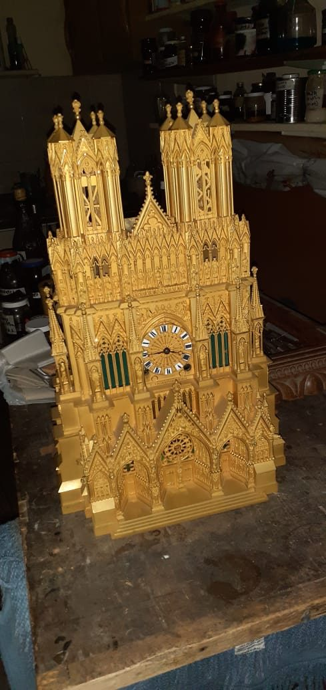
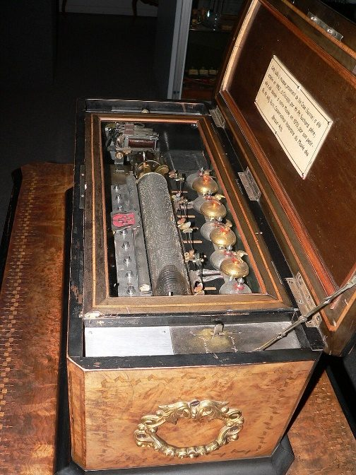
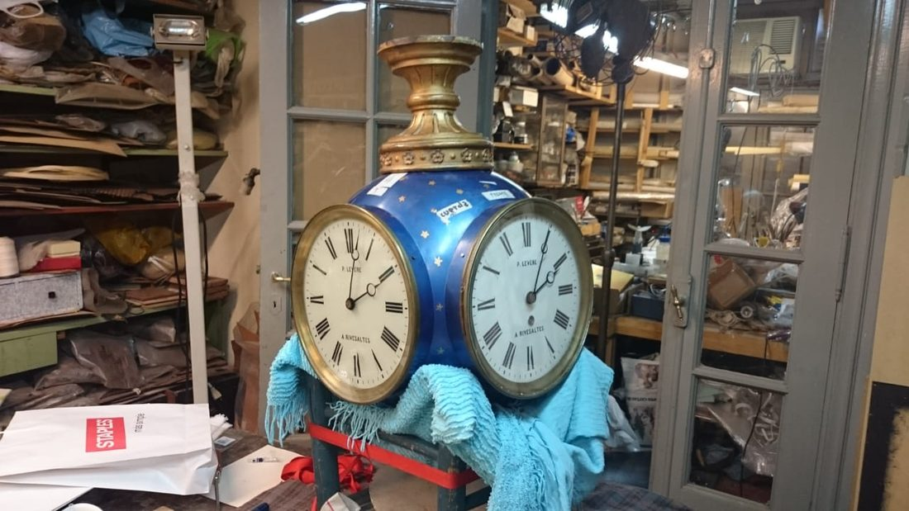
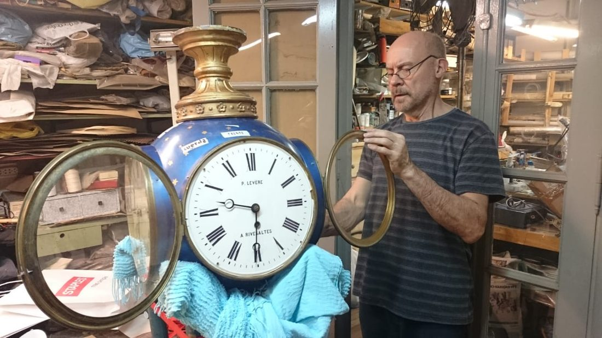
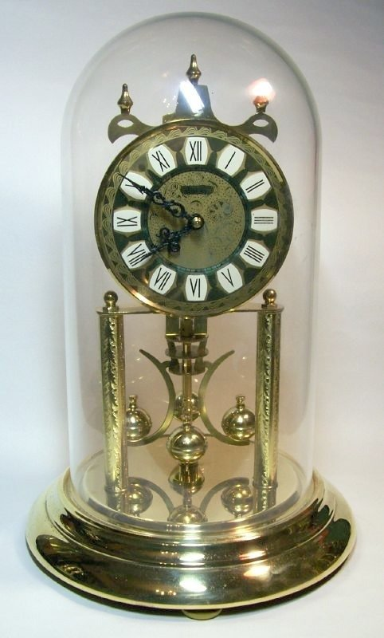
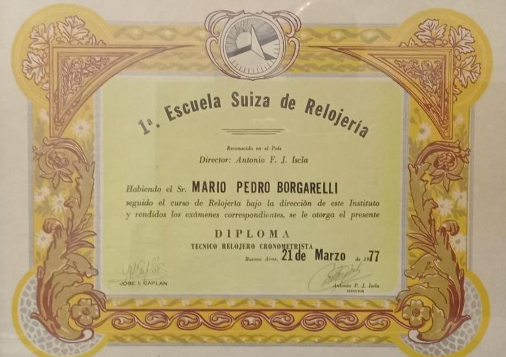

Galería
El trabajo habla por sí solo










◇ Más fotos próximamente
Desde los catorce años le devuelvo la vida a relojes antiguos de péndulo, sonería y carrillón. No sólo la maquinaria: también la caja, la porcelana y cada detalle que hace única a la pieza.
“Empecé como aprendiz a los catorce. A los veintiséis, con un vasto conocimiento del rubro, me diplomé como Técnico Relojero Cronometrista en la 1.ª Escuela Suiza de Relojería, en 1977.
Desde entonces, mi trabajo nunca se limitó a la maquinaria. Cada reloj antiguo es también un objeto con historia: la caja de madera, la porcelana ornamentada, los detalles que lo vuelven irrepetible. Todo eso lo restauro y lo conservo con el mismo cuidado que el mecanismo que lleva adentro.”

Incluidos los relojes de pie de hasta dos o más metros de altura.
Mecanismos a péndulo con sonería simple o con carrillón.
Los de cuerda anual que descansan bajo una campana de vidrio.
Restauración del mecanismo y de la caja. También fabrico los silbatos que dan el típico canto del cu-cú al sonar las horas.
Piezas de bolsillo, siempre de época.
Madera, porcelana con ornamentos y piezas de marfil devueltas a su esplendor.
Piezas monumentales y de torre, como el caso de un reloj de cuatro caras que funcionó en una estación de trenes en Londres.
Mecanismos de cilindro y peine, con sus campanas, restaurados y puestos nuevamente a sonar.
Cualquier tipo. Cualquier marca.
Un valor estándar para evaluar la pieza y elaborar el presupuesto. Si aprobás el trabajo, ese valor se toma a cuenta.
Un informe detallado del estado en que se recibe la pieza, con todas las reparaciones a realizar y el listado de materiales a reponer o fabricar.
Cuando hace falta, los repuestos originales los busco en el exterior o los fabrico a medida, uno por uno.
Una limpieza ronda los quince días. Una restauración lleva el tiempo que la pieza necesite para volver a andar bien.
Trabajo principalmente a domicilio, dentro de CABA y el AMBA. También recibo piezas del interior, con la instalación a cargo del cliente, y en casos excepcionales viajo personalmente a dejar el reloj funcionando.





◇ Más fotos próximamente
Recuperó el reloj de pared de mi abuelo, que llevaba años detenido. Volver a escucharlo sonar fue como recuperar una parte de la familia.
Cliente · CABAUn trabajo impecable y muy respetuoso con la pieza original. Una atención y una dedicación que ya casi no se encuentran.
Cliente · Zona NorteTextos de ejemplo, a reemplazar por testimonios reales de tus clientes.
Escribime por donde te quede más cómodo. Contame qué reloj tenés y con gusto te preparo un presupuesto para devolverle la vida.